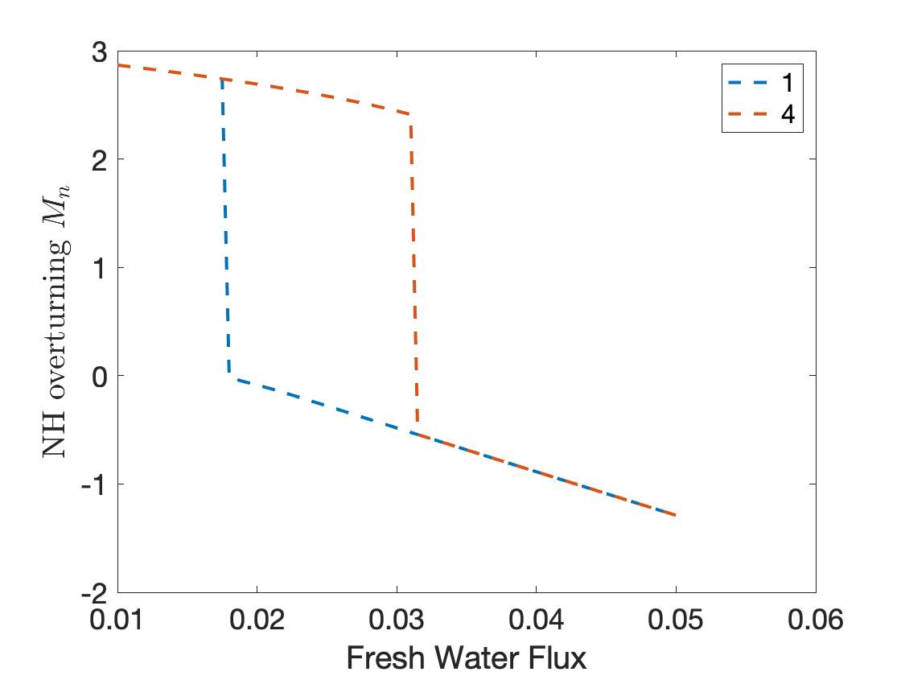
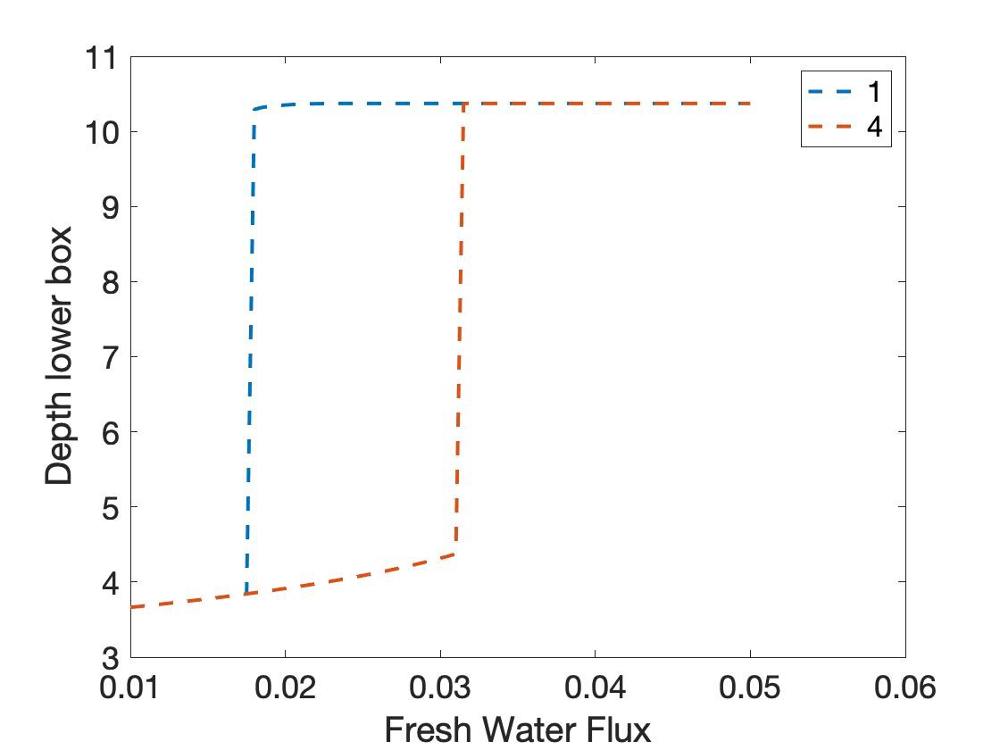
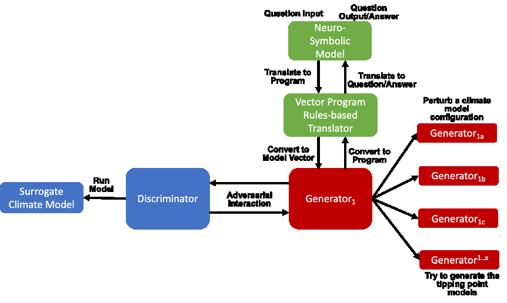
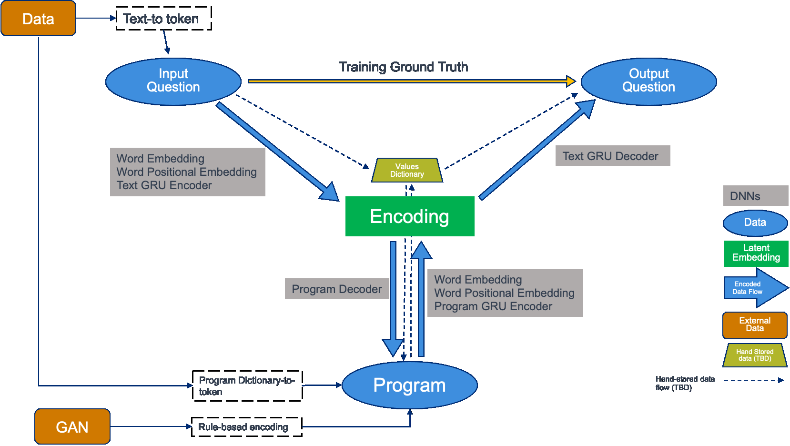
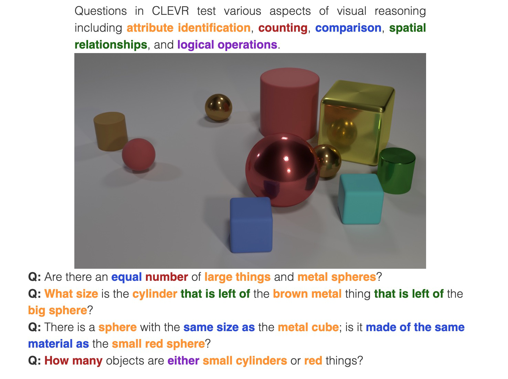
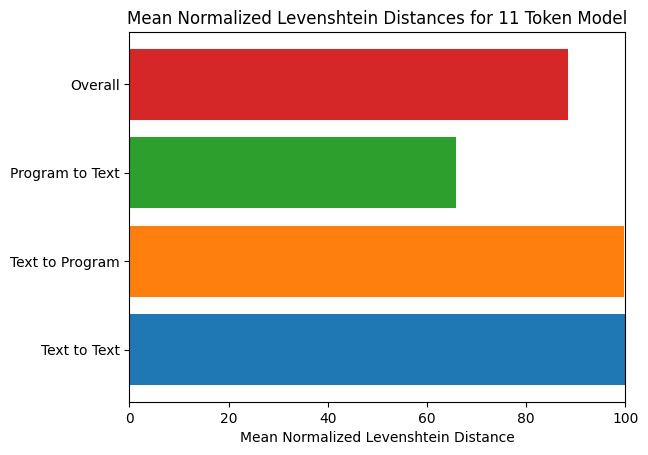
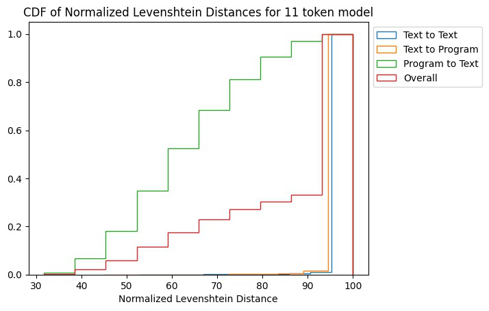
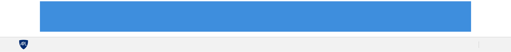

Milestone 6 Progress Report
PACMANS TEAM: • Jennifer Sleeman (JHU APL) PI • Anand Gnanadesikan (JHU) Co-PI • Yannis Kevrekidis (JHU) Co-PI • Jay Brett (JHU APL) • David Chung (JHU APL) • Chace Ashcraft (JHU APL) • Thomas Haine (JHU) • Marie-Aude Pradal (JHU) • Renske Gelderloos (JHU) • Caroline Tang (DUKE) • Anshu Saksena (JHU APL) • Larry White (JHU APL) • Marisa Hughes (JHU APL)
1 Overview
The Physics-informed AI Climate Model Agent Neuro-symbolic Simulator (PACMANS) for Tipping Point Discovery
This technical report covers the period of June 14, 2022 through August 13, 2022.
The report documents the achievement of the milestone associated with Month 8 of the JHU/APL-led PACMAN team’s statement of work.
The delivery for this milestone is this report which highlights AI Physics-informed surrogate model progress and the AI Simulation progress.
- This milestone includes:
2 Goals and Impact
3 Key Findings
Surrogate Models:
We have achieved the first calculation of escape time distributions for the 4-box model (non-dimensionalized)
AI Simulation:
We showed that the GAN could be used to exploit the area of uncertainty, consistent with the separatrix of the fold bifurcations, consistent with the Gnanadesikan 2018 paper
By fixing the loss function to include information from the discriminator’s uncertainty and increasing the number of generators using this generative setup, as the number of generators increases, the GAN becomes more focused on this area of uncertainty
We believe we could extend the GAN to explore additional types of bifurcations
Using the CLEVR dataset we are now able to measure performance of the neuro-symbolic architectures and have strong preliminary results using Levenstein distance as a metric
4 Task 3.4: AI Physics-Informed Surrogate Model Summary
Subtask Description: We will provide a progress report of the early proof of concept experimental results.
Accomplishments:
Have developed a first version of the Python code for the surrogates consistent with the bifurcation diagrams
In-process to integrate this code to be used by the GAN
Working on estimating the escape time distributions
The Model
- We consider a dynamical box model with four boxes:
the southern high latitudes (0.308S)
the northern high latitudes (0.458N)
mid- to low latitudes
a deep box that lies beneath all of the surface boxes.
- State variables:
𝐷: Low latitude pycnocline depth.
𝑇_S, 𝑇_n, 𝑇_l, 𝑇_d: Temperatures of the four boxes
𝑆_S, 𝑆_n, 𝑆_l, 𝑆_d: Salinities of the four boxes
Single-headed bold arrows denote net fluxes of water.
Double-headed arrows denote mixing fluxes.
Nine Equations
These are the equations that we start with (nine differential equations)
Salt Conservation
IMPORTANTLY, we explicitly used the fact that there exists an algebraic constraint (a salt balance) that reduces the equations by one, and removes a neutral direction; this helps the conditioning of the Jacobian
Non-Dimensional Equations
To make computations more accurate numerically, we non-dimensionalized the equations in ways meaningful to the domain scientist (Anand G.) to reduce the number of free parameters
Numerical Bifurcation Analysis
 The Hysteretic behavior found in [Gnanadesikan, Kelson, Sten 2018], can be described as:
The ‘switching’ between ‘off’ and ‘on’ state is given by a subcritical Hopf bifurcation: H for 𝑇𝑟>?* = 0.03529
And a saddle-node bifurcation: LP for 𝑇𝑟>?* = 0.01798
Reminder: we found two different tipping points (“up to down” and “down to up” that also happened to do be of different nature (“turning point” and “subcritical Hopf”)
Stochastic version
To the non-dimensional system of 8 equations, we add fluctuations in the fresh water flux coefficient: \(𝑇𝑟_{FW}^n ∼ 𝒩(𝑇𝑟_{FW0}^n, 𝜎^2)\)
With \(𝜎 = 4\% 𝑇𝑟_{FW}^n = 0.002\)
AI Surrogate Learning Progress Next Steps:
We started collecting data towards a targeted surrogate model. This will allow us to efficiently and accurately estimate escape time distributions.
We will learn targeted effective stochastic DEs (one-dimensional at the LP tipping, two-dimensional at the Hopf tipping) and use them to estimate escape time statistics in both cases.
We have a very good handle on data-driven causality; the enabling tools are “Alternating Diffusion” / “Jointly Smooth Functions”
We plan to use this in the discovery of good predictors/advance indicators of tipping.
5 Task 4.4: AI Simulation Progress Summary
Subtask Description: We will provide a progress report of the early proof of concept experimental results for the MA-GAN, the causal model and the neuro-symbolic models, including isolated experimental results and early integration results.
Accomplishments:• Showed that the GAN could be used to exploit the area of uncertainty consistent with the separatrix in the Gnanadesikan 2018 paper• Developed architectures needed for a baseline neuro-symbolic language that enables a translation from human-specific questions to the GAN simulation, and from perturbed GAN runs to questions• Begun integrating the neuro-symbolic work with GAN output
AI Simulation – GAN Uncertainty Experiment Objective
• Initial Questions: | • How does increasing generators affect learning behavior?• How should we modify the loss function (best function for finding optimal gradients of model) for this problem domain?• Can the GAN discover input configurations for a climate model whose outputs are unstable or uncertain?• i.e. explore separatrix• How well can the GAN accurately predict the climate model outputs for configurations spanning these regions of uncertainty?
AI Simulation – GAN Uncertainty Experiments
Reproduced one of the Box model simulation experiments to validate the GAN architecture
With a vector of 3 dimensions and perturbations of parameters (bounded):
Dlow0 (Thermocline depth of lower latitudes): [100.0, 400.0]
Mek (Ekman flux from the southern ocean): [1.5e7, 3.5e7]
Fwn (Fresh water flux (North)): [5.0e4, 1.55e6]
Other variables were held constant
AI Simulation – GAN Uncertainty Experiment Discriminator
Given a configuration, the discriminator has two objectives:
Identify the origin of the configuration (i.e. which generator produced it or if it was sampled from the real data distribution)
Correctly predict if the configuration will induce a shutoff state
At each update step, the discriminator will achieve these two objectives for m(n+1) configurations (m samples per each of n generators, +1 batch from the real data distribution)
Ground-truth shutoff labels are determined for the generated configurations by consulting the surrogate model before the training step
AI Simulation – GAN Uncertainty Experiment Generator
n Generators:
for i=1,…, n
Generator i (𝐺𝑖 ) produces m configurations for the surrogate model (m = batch size)
The generated configurations are passed through the discriminator to compute both the GAN logits and the AMOC state classification logits
Each generator has two objectives:
Guide the discriminator into predicting that its configurations are sampled from the real data distribution
Generate model configurations where the discriminator is least certain about the output state (i.e. AMOC shutoff vs. non-shutoff)
AI Simulation – GAN Uncertainty Experiments
Real dataset generated by uniformly sampling vectors of perturbed variables from bounded 3-D subspace.
Goal of GAN is to learn a distribution that explores this space, but with a bias to identify regions of AMOC instability (e.g. bifurcation region)
Number of generators varied (n = 1, 2, 3)
Evaluation metrics:
Percentage of generated samples within the bifurcation region
Discriminator shutoff classification metrics (precision, recall, F1, confusion matrices)
Test/generated sets
Inside/outside bifurcation region
Dataset |
Percent in uncertainty region |
|---|---|
Training |
34.9% |
Test |
35.5% |
GAN (N=1) |
67.4% |
GAN (N=2) |
91.4% |
GAN (N=3) |
98.7% |
Training samples: 10,774 Test samples: 2,694
GAN samples: 2,694
N = number of generators
|
Generated Set (N=3) |
Test set |
Generated Set (N=1) |
Generated Set (N=2) |
Comparing GAN Generated Results for N = (1,2,3) with the Test Set.
The GAN successfully learned to sample configurations from the bifurcation region |
|
|---|---|
This selectivity increases w/ the number of generators – supporting our multiGAN approach |
AI Simulation – Neuro-Symbolic Learning
Neuro-Symbolic Translations and GAN Input/Output
Learning to Translate Questions into Programs and Programs into Questions
Using the CLEVR dataset to validate architectures:
Common dataset for neuro-symbolic method evaluation
Specific to image object understanding
We adapt this dataset and use only the question and program portions of the data
Used 59,307 training samples and 12,698 test samples
Trained network with shared word embeddings
Evaluated using test samples
Test samples contained both natural language questions and equivalent programs
Early results showed a range of 65%-75% accuracy overall translating from questions to questions, questions to programs, and programs to questions dependent up the token length
We show better results with longer token length
Example Output:
Predicted text: BOS how many small cyan things are there ? EOS
Ground Truth Text: BOS how many small cyan things are there ? EOS
Predicted program: BOS count ( filter_color ( filter_size ( scene , small ) , cyan ) ) EOS
Ground Truth program: BOS count ( filter_color ( filter_size ( scene , small ) , cyan ) ) EOS
 Predicted text from program: BOS how many of cyan things are are ? ? EOS
Levenshtein distance shows the number of transformations from one sentence to another.
Initial results are promising; transfer learning into the climate domain in progress 
Summary
In summary, we have described consistent progress across both the surrogate methods and the AI Simulation methods.
All source code is open and available in Github.
Initial evaluations have been performed and module integrations is in-progress.

{kind=link}
{kind=link}
{kind=link}
{kind=link}
{kind=link}
{kind=link}
{kind=link}
{kind=link}
{kind=link}
{kind=link}
{kind=link}
{kind=link}
{kind=link}
{kind=link}
{kind=link}
{kind=link}
{kind=link}
{kind=link}
{kind=link}
{kind=link}
{kind=link}
{kind=link}
Approved for public release; distribution is unlimited. This material is based upon work supported by the Defense Advanced Research Projects Agency (DARPA) under Agreement No. HR00112290032.
Citations
1. Boers, Niklas. “Observation-based early-warning signals for a collapse of the Atlantic Meridional Overturning Circulation.” Nature Climate Change 11, no. 8 (2021): 680-688.
2. Gnanadesikan, A., A simple model for the structure of the oceanic pycnocline, Science., 283:2077-2079, (1999).
3. Forget, G., J.-M. Campin, P. Heimbach, C. N. Hill, R. M. Ponte, C. Wunsch, ECCO version 4: An integrated framework for non-linear inverse modeling and global ocean state estimation. Geosci. Model Dev. 8, 3071–3104 (2015)4. Gnanadesikan, A., R. Kelson and M. Sten, Flux correction and overturning stability: Insights from a dynamical box model, J. Climate, 31, 9335-9350, https://doi.org/10.1175/JCLI-D-18-0388.1, (2018).5. Kaufhold, John Patrick, and Jennifer Alexander Sleeman. “Systems and methods for deep model translation generation.” U.S. Patent No. 10,504,004. 10 Dec. 2019.
6. Garcez, Artur d’Avila, and Luis C. Lamb. “Neurosymbolic AI: the 3rd Wave.” arXiv preprint arXiv:2012.05876 (2020).
7. Stommel, H. Thermohaline convection with two stable regimes of flow. Tellus 13, 224–230 (1961).
8. Karniadakis, George Em, Ioannis G. Kevrekidis, Lu Lu, Paris Perdikaris, Sifan Wang, and Liu Yang. “Physics-informed machine learning.” Nature Reviews Physics 3, no. 6 (2021): 422-440.
9. Sleeman, Jennifer, Milton Halem, Zhifeng Yang, Vanessa Caicedo, Belay Demoz, and Ruben Delgado. “A Deep Machine Learning Approach for LIDAR Based Boundary Layer Height Detection.” In IGARSS 2020-2020 IEEE International Geoscience and Remote Sensing Symposium, pp. 3676-3679. IEEE, 2020.
10. Patel, Kinjal, Jennifer Sleeman, and Milton Halem. “Physics-aware deep edge detection network.” In Remote Sensing of Clouds and the Atmosphere XXVI, vol. 11859, pp. 32-38. SPIE, 2021.
11.Brulé, Joshua. “A causation coefficient and taxonomy of correlation/causation relationships.” arXiv preprint arXiv:1708.05069 (2017).
12. Rasp, Stephan, Michael S. Pritchard, and Pierre Gentine. “Deep learning to represent subgrid processes in climate models.” Proceedings of the National Academy of Sciences 115, no. 39 (2018): 9684-9689.
13. Bolton, Thomas, and Laure Zanna. “Applications of deep learning to ocean data inference and subgrid parameterization.” Journal of Advances in Modeling Earth Systems 11, no. 1 (2019): 376-399.
14. Kurth, Thorsten, Sean Treichler, Joshua Romero, Mayur Mudigonda, Nathan Luehr, Everett Phillips, Ankur Mahesh et al. “Exascale deep learning for climate analytics.” In SC18: International Conference for High Performance Computing, Networking, Storage and Analysis, pp. 649-660. IEEE, 2018.
15. Weber, Theodore, Austin Corotan, Brian Hutchinson, Ben Kravitz, and Robert Link. “Deep learning for creating surrogate models of precipitation in Earth system models.” Atmospheric Chemistry and Physics 20, no. 4 (2020): 2303-2317.
16. Matsubara, Takashi, Ai Ishikawa, and Takaharu Yaguchi. “Deep energy-based modeling of discrete-time physics.” arXiv preprint arXiv:1905.08604 (2019).
17. Kleinen, T., Held, H. & Petschel-Held, G. The potential role of spectral properties in detecting thresholds in the Earth system: application to the thermohaline circulation. Ocean Dyn. 53, 53–63 (2003).
18. Kocaoglu, Murat, Christopher Snyder, Alexandros G. Dimakis, and Sriram Vishwanath. “Causalgan: Learning causal implicit generative models with adversarial training.” arXiv preprint arXiv:1709.02023 (2017).
19. Feinman, Reuben, and Brenden M. Lake. “Learning Task-General Representations with Generative Neuro-Symbolic Modeling.” arXiv preprint arXiv:2006.14448 (2020).
20. Yi, Kexin, Chuang Gan, Yunzhu Li, Pushmeet Kohli, Jiajun Wu, Antonio Torralba, and Joshua B. Tenenbaum. “Clevrer: Collision events for video representation and reasoning.” arXiv preprint arXiv:1910.01442 (2019).
21. Nowack, Peer, Jakob Runge, Veronika Eyring, and Joanna D. Haigh. “Causal networks for climate model evaluation and constrained projections.” Nature communications 11, no. 1 (2020): 1-11.
22. Andersson, Tom R., J. Scott Hosking, María Pérez-Ortiz, Brooks Paige, Andrew Elliott, Chris Russell, Stephen Law et al. “Seasonal Arctic sea ice forecasting with probabilistic deep learning.” Nature communications 12, no. 1 (2021): 1-12.
23. Storchan, Victor, Svitlana Vyetrenko, and Tucker Balch. “MAS-GAN: Adversarial Calibration of Multi-Agent Market Simulators.” (2020).
24. De Raedt, Luc, Robin Manhaeve, Sebastijan Dumancic, Thomas Demeester, and Angelika Kimmig. “Neuro-symbolic=neural+ logical+ probabilistic.” In NeSy’19@ IJCAI, the 14th International Workshop on Neural-Symbolic Learning and Reasoning. 2019.
25. Eyring, V., Bony, S., Meehl, G. A., Senior, C. A., Stevens, B., Stouffer, R. J., and Taylor, K. E.: Overview of the Coupled Model Intercomparison Project Phase 6 (CMIP6) experimental design and organization, Geosci. Model Dev., 9, 1937-1958, doi:10.5194/gmd-9-1937-2016, 2016.
26. Swingedouw, Didier, Chinwe Ifejika Speranza, Annett Bartsch, Gael Durand, Cedric Jamet, Gregory Beaugrand, and Alessandra Conversi.
“Early warning from space for a few key tipping points in physical, biological, and social-ecological systems.” Surveys in geophysics 41, no. 6 (2020): 1237-1284.
27. Reichstein, Markus, Gustau Camps-Valls, Bjorn Stevens, Martin Jung, Joachim Denzler, and Nuno Carvalhais. “Deep learning and process understanding for data-driven Earth system science.” Nature 566, no. 7743 (2019): 195-204.
28. Sleeman, Jennifer, Ivanka Stajner, Christoph Keller, Milton Halem, Christopher Hamer, Raffaele Montuoro, and Barry Baker. “The Integration of Artificial Intelligence for Improved Operational Air Quality Forecasting.” In AGU Fall Meeting 2021. 2021.
29. Bellomo, K., Angeloni, M., Corti, S. et al. Future climate change shaped by inter-model differences in Atlantic meridional overturning circulation response. Nat Commun 12, 3659 (2021).30. Sgubin, G., Swingedouw, D., Drijfhout, S. et al. Abrupt cooling over the North Atlantic in modern climate models. Nat Commun 8, 14375 (2017).31. Swingedouw, D., Bily, A., Esquerdo, C., Borchert, L. F., Sgubin, G., Mignot, J., & Menary, M. (2021). On the risk of abrupt changes in the North Atlantic subpolar gyre in CMIP6 models. Annals of the New York Academy of Sciences, 1504(1), 187-201. 32. Mao, Jiayuan, Chuang Gan, Pushmeet Kohli, Joshua B. Tenenbaum, and Jiajun Wu. “The neuro-symbolic concept learner: Interpreting scenes, words, and sentences from natural supervision.” arXiv preprint arXiv:1904.12584 (2019).